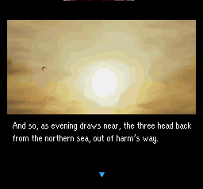

|   |
Title: ファ
ミコン探偵倶楽部PartII うしろに立つ少女 (Translation: Famicom
Detective Club II: The Girl who Stands in the
Back) Translation
Team: Tomato
& Demiforce This is the remake of a sequel to a a popular Famicom disc system game from japan. This version features really cool graphics and a dark, moody atmosphere, with some cool scary music. Summary "The story begins as a young 15 year old boy (you) is searching for his parents late one night. As he searches, two men begin to chase him. You flee from them, only to be stopped by a competent looking man rounding a corner. The men catch up, and turn out to be police officers. Once they realize who the man is, they leave. The man reveals that he is a detective, and decides to take you in as his protegé. A few months or so later, a young sophomore at Ushimitsu high school is found dead on the bank of the river. She is identified as Yōko Kojima. It is quickly deduced that she was murdered by strangulation. As you decide this, another freshman from Ushimitsu, Ayumi Tachibana, and a teacher there, Tatsuya Hibino, show up at the crime scene. Both are shocked and speechless at the sight of Yoko dead. So begins the mystery."Super Smash Bros Melee Heres a picture of school girl Ayumi Tachibana, who's a main character in this game. She's in Nintendo's Smash Bros. Melee as a trophy! Finally, recognition! Yay! Anyway, that's just interesting information you might like to know! "Ayumi's the heroine of the Detective Club games, which were made for the Famicom Disk System. In the first installment of the series, Ayumi solved the murder of one of her friends, and shortly thereafter, she opened her own investigative agency. Since those early days, she's proven to be a daring and peerless crime solver." Easter Eggs / Trivia FCDCPII has quite a few "easter eggs" and other "Secrets", most of which are listed here: (May Contain FCDCPII Spoilers!) Part II? In the late 1980's, Nintendo released a game called "Famicom Tantei Club: The Missing Heir" for its Famicom Disk System. (Also available on the Japanese Wii Virtual Console!) Shortly after, it released a sequel, also on the Disk System. About 10 years later, they made a third game called "BS Tantei Club: Yuki Kieru Kako", which was distributed via Satellaview. Unfortunately for that one, which was released on Satellaview, it is not yet playable on emulators because of the way the satellaview works. The satellaview receives satellite data from nintendo that is the game code, only the saves are stored on cartridge, Making it impossible to dump the cartridge data, meaning that this game, at this time, is unplayable via emulators. The following year (1997), Nintendo made a remake of "Famicom Tantei Club Part II", for the Super Nintendo, but this time as a "Nintendo Power" Flash Cart Exclusive Game. "Nintendo Power " Flash Cart The Nintendo Power flash RAM cartridge was a Japan-only peripheral produced by Nintendo for the Super Famicom which allowed owners to download Super Famicom/Game Boy games onto a special flash RAM cartridge for cheaper than the full cartridge would have been. and the Game Boy, During the days of the Famicom, Nintendo developed the Famicom Disk System, a disk drive with expanded RAM which allowed Famicom owners to use rewritable disks. The system was relatively popular, but suffered from issues of piracy and limited capacity. However, Nintendo did see the market for a rewritable game device thanks to the popularity of the FDS. The NP cartridges solve the piracy issue by the fact that they are solid-state, as opposed to being a rewritable medium like the FDS, making their use in duplication limited. The limited capacity issue was solved by maximizing the size of the flash memory in the cartridge to 32 megabits, the largest amount used by the vast majority of Super Famicom games. Each cartridge's flash RAM is divided internally into eight blocks. Unless an 8-block game is loaded onto the cartridge, however, one block is reserved for the game selection menu, leaving only seven blocks for games. In addition, each cartridge has a small amount of SRAM for game saves, which is divided into sixteen blocks. Games are rounded up in capacity (i.e. a 10 megabit Super Famicom game needs three flash RAM blocks (12 megabits), a Game Boy game that needs 100 kilobits of save space would need 2 SRAM blocks (128 kilobits).) The system does have one limitation - games that utilize a special chip (such as the Super FX) cannot be placed on the NP cartridge, as the needed chip was not in the cartridge. A user would first purchase the RAM cartridge itself, then bring it to a store which had an NP copier. The player would select games to be placed on the cartridge, and then had them loaded on. In addition, the store would provide the purchaser with a printed copy of the manual for the game. Game prices varied, with older titles being relatively cheap, and newer titles and NP exclusives being more expensive. (Famicom Tantei Club Part 2 (Remake) was an NP exclusive.) Famicom Tantei Club Game ListFamicom Detective Club Part II Characters
You - A clever young detective being trained by Utsugi. It is up to you to help solve Yoko's murder.
Ayumi Tachibana - A clever friend of Yoko's. She is shocked at Yoko's loss, but quickly pulls together to help in the investigation.
Shunsuku Utsugi- A well-known and respected detective and head of the Utsugi Detective Agency. He is your mentor throughout the game.
Yōko Kojima - She was an inquisitive girl and leader of the detective club before she was murdered. All that knew her have fond memories of her.
Tetsushi Komada - The Art teacher at Ushimitsu. He is somewhat absentminded and forgetful, but helpful and cheerful as well.
Tatsuya Hibino - A fragile teacher at Ushimitsu. He is shocked beyond words when he sees Yoko dead.
Toshio Tazaki - The shifty and jumpy janitor at Ushimitsu. He has a grumpy aura around him.
Principal Urabe - The kind-hearted principal of Ushimitsu. All respect him. He treats all his students and staff like his own family.
Hitomi Kawai - A student at Ushimitsu. He is the ringleader of all the hoodlums and punks at the school. He is a gruff guy, but has a good heart. He apparently was close friends with Yoko before she was murdered. Downloads Links Reviews "Another gift to Tomato. Since he's translating Famicom Detective Club Part 2 for the SNES, I made this pic to show him my appreciation for everything is doing for us gamers (Star Ocean anyone?)." - Emilo "Famicom Detective Club is excellent. It's not the longest game, but it's tons of fun. The soundtrack is pretty catchy too. I'm still waiting for a remake on the DS (heh, like that would ever happen...). " - Nimbus "This is like the best SNES game I've played in a loooong time. What can I say, the translation is perfect and everything seems to be professional-like. I can't wait to finish the game." - Kunio "Good LAWRD, that ending was pretty creepy. But the story really came together in the end pretty nicely. But I only got 8.5/20 on the Ayumi Love meter..." - Wasabi Milkshake "Man... I beat that today. It really was an awesome game, and now I know why Tomato liked it so much. Tomato and Demi are so freaking awesome for putting this together." - Skultyk "I must say that this game looks like a much deeper game than i would have expected. It has a great story, good graphics and unlike some games of the sort, involves a fair amount of real thinking and gameplay. Nice work on the translation, mato." - madcow "I just beat that game last week. :D I liked it a lot and I wish I knew Japanese so I could play the first one." - Poetrader |
{kind=link}